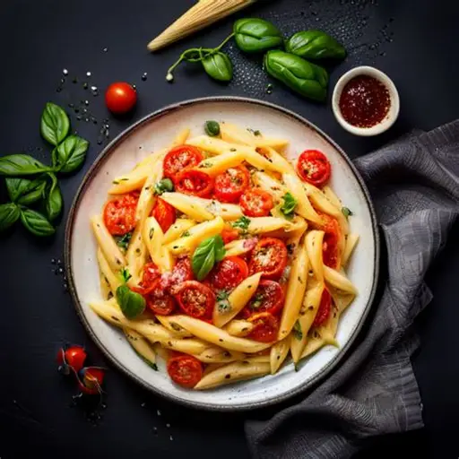
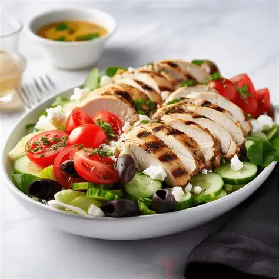
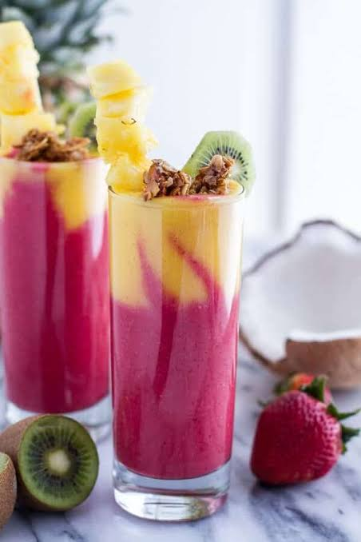

3 recipes found
Pasta

| Ingredients |
|---|
| Olive oil – 2 tbsp |
| Garlic – 2 cloves, minced |
| Cherry tomatoes – 1 cup, halved |
| Salt – to taste |
| Black pepper – to taste |
| Parmesan cheese – for topping |
| Fresh basil – few leaves |
Instructions:
Boil pasta until al dente.
Sauté garlic in olive oil, add tomatoes and cook a few minutes.
Toss pasta with sauce, season with salt and pepper,
then top with Parmesan and basil before serving.
Enjoy your meal!
Chicken Salad

| Ingredients |
|---|
| Chicken breast – 1 piece |
| Lettuce – 2 cups |
| Tomato – 1 |
| Cucumber – 1 |
| Olive oil – 1 tbsp |
| Salt – to taste |
| Black pepper – to taste |
Instructions:
Cook the chicken and cut it into small pieces.
Mix the chicken with lettuce, tomato and cucumber.
Add olive oil, salt and black pepper.
Mix well and enjoy your salad!
Fruit Smoothie

| Ingredients |
|---|
| Banana – 1 |
| Strawberries – 1 cup |
| Milk – 1 cup |
| Honey – 1 tbsp |
Instructions:
Add all the ingredients to a blender.
Blend until smooth and creamy.
Pour into a glass and enjoy!